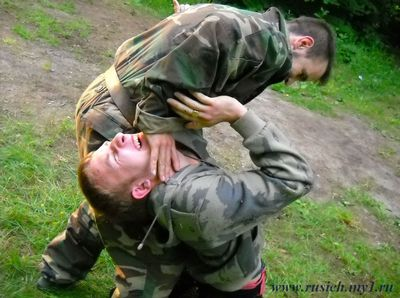

|
||||||||||||||
Клуб славянских боевых искусств "РУСИЧ" Клуб «Русич» образован в 2007году в городе Твери. Руководителем клуба является тренер русского рукопашного боя Роман Юрьевич Починков, человек не понаслышке знающий, что такое рукопашный бой и выживание в экстремальных условиях, прошедший службу в частях специального назначения и участвовавший в боевых столкновениях. Клуб «Русич» создан в большей степени как клуб по интересам, где все предложения выносятся на обсуждение в «кругу». После каждой тренировки у участников есть возможность разобрать особенности того или иного элемента, задать интересующие их вопросы. Основной целью создания клуба является воспитание патриотического духа молодежи, повышение моральной стойкости, а так же обучение выживанию в экстремальных ситуациях, психологии поведению в условиях уличной стычки. Так же нашей целью является подготовка парней допризывного возраста к армии, чтобы они не только не боялись прохождения службы, но, наоборот, стремились служить. Для этого клуб «Русич» проводит выезды в военно-патриотические лагеря, где ребята окунутся на несколько дней в армейскую жизнь, пройдут строевую и специальную подготовку. Преподаваемый в клубе вид русского рукопашного боя не является каким-либо «секретным, утраченным, а потом найденным в завалах генетической памяти видом боя древних гипербореев». Система, изучаемая в клубе, содержит в себе несколько видов русских боевых искусств, и ориентирована на то, чтобы в ситуации уличного боя или бандитского нападения быстро и эффективно обезоружить и обезвредить нападающих, адекватно реагировать на уровень опасности. Очень важно что, преподавая рукопашный бой, мы стремимся к тому, чтобы занимающиеся понимали, что реальная рукопашная схватка и спортивный спарринг - абсолютно разные вещи, а потому обучение ведется в условиях приближенных к реальным (улица, скользкая поверхность, лестничные пролеты, подъезд, автомобиль..) и техника дается далекая от спортивных видов единоборств. Для девушек преподается адаптированная техника, с иным уклоном и иной психологией боя. Для желающих более углубленно изучить славянские традиции, занимающимся в клубе «Русич» предоставляется возможность посещать лекции в академии славянской культуры,а также принимать участие в проведении русских народных гуляний. В летнее время тренировки проходят в мигаловской роще (конечные остановки автобусов 20, 21 маршрута, газели 14, 2, 9) недалеко от чапаевского домика |
||||||||||||||